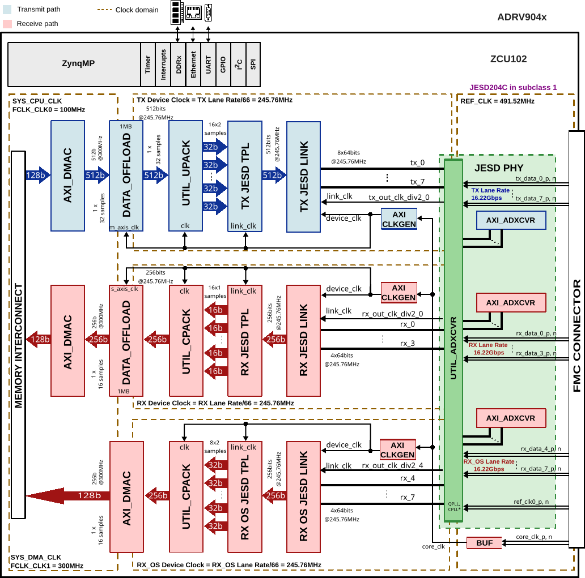
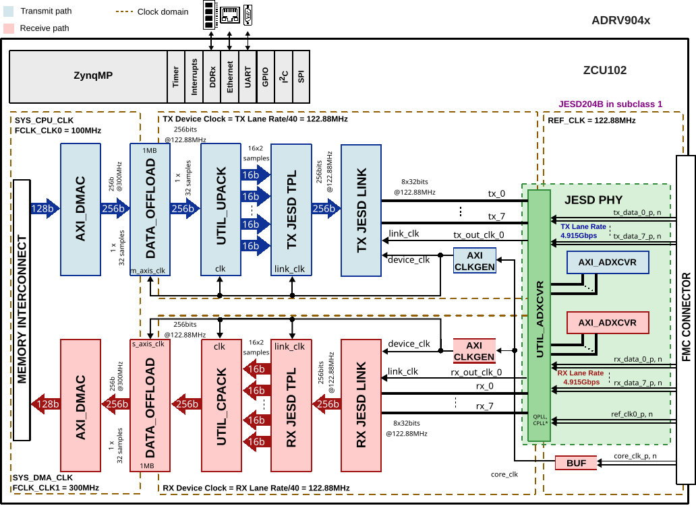
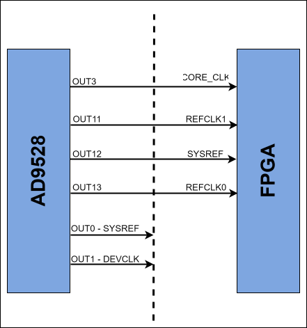

ADRV904X HDL reference design
The ADRV904X is a highly integrated, system on chip (SoC) radio frequency (RF) agile transceiver with integrated digital front end (DFE). The SoC contains eight transmitters, two observation receivers for monitoring transmitter channels, eight receivers, integrated LO and clock synthesizers, and digital signal processing functions. The SoC meets the high radio performance and low power consumption demanded by cellular infrastructure applications including small cell basestation radios, macro 3G/4G/5G systems, and massive MIMO base stations.
Supported devices
Supported boards
Supported carriers
Evaluation board |
Carrier |
FMC slot |
|---|---|---|
EVAL-ADRV904X |
FMC HPC0 |
Block design
Block diagram
The data path and clock domains are depicted in the below diagrams:
Example block design for Single link and RX OBS disabled
{kind=link}
Block name |
IP name |
Documentation |
Additional info |
|---|---|---|---|
AXI_ADXCVR |
2 instances, one for Rx and one for Tx |
||
AXI_CLKGEN |
2 instances, one for Rx and one for Tx |
||
AXI_DMAC |
2 instances, one for Rx and one for Tx |
||
DATA_OFFLOAD |
2 instances, one for Rx and one for Tx |
||
RX JESD LINK |
axi_adrv904x_rx_jesd |
Instantiaded by |
|
RX JESD TPL |
rx_adrv904x_tpl_core |
Instantiated by |
|
TX JESD LINK |
axi_adrv904x_tx_jesd |
Instantiaded by |
|
TX JESD TPL |
tx_adrv904x_tpl_core |
Instantiated by |
|
UTIL_UPACK |
— |
||
UTIL_CPACK |
— |
The Rx links (ADC Path) operate with the following parameters:
Rx Deframer parameters: L=8, M=16, F=4, S=1, NP=16, N=16
Sample Rate: 491.52 MSPS
Dual link: No
RX_DEVICE_CLK: 245.76 MHz (Lane Rate/66)
REF_CLK: 491.52 MHz (Lane Rate/33)
JESD204C Lane Rate: 16.22 Gbps
QPLL0
The Tx links (DAC Path) operate with the following parameters:
Tx Deframer parameters: L=8, M=16, F=4, S=1, NP=16, N=16
Sample Rate: 491.52 MSPS
Dual link: No
TX_DEVICE_CLK: 245.76 MHz (Lane Rate/66)
REF_CLK: 491.52 MHz (Lane Rate/33)
JESD204C Lane Rate: 16.22 Gbps
QPLL0
Example block design for Single link and RX OBS in Non-LinkSharing mode
{kind=link}

Block name |
IP name |
Documentation |
Additional info |
|---|---|---|---|
AXI_ADXCVR |
3 instances, one for Rx, one for Rx-os and one for Tx |
||
AXI_CLKGEN |
3 instances, one for Rx, one for Rx-os and one for Tx |
||
AXI_DMAC |
3 instances, one for Rx, one for Rx-os and one for Tx |
||
DATA_OFFLOAD |
3 instances, one for Rx, one for Rx-os and one for Tx |
||
RX JESD LINK |
axi_adrv904x_rx_jesd |
Instantiaded by |
|
RX JESD TPL |
rx_adrv904x_tpl_core |
Instantiated by |
|
RX OS JESD LINK |
axi_adrv904x_rx_os_jesd |
Instantiaded by |
|
RX OS JESD TPL |
rx_os_adrv904x_tpl_core |
Instantiated by |
|
TX JESD LINK |
axi_adrv904x_tx_jesd |
Instantiaded by |
|
TX JESD TPL |
tx_adrv904x_tpl_core |
Instantiated by |
|
UTIL_UPACK |
— |
||
UTIL_CPACK |
2 instances one for Rx and one for Rx-os |
The Rx links (ADC Path) operate with the following parameters:
Rx Deframer parameters: L=4, M=16, F=8, S=1, NP=16, N=16
Sample Rate: 245.76 MSPS
Dual link: No
RX_DEVICE_CLK: 245.76 MHz (Lane Rate/66)
REF_CLK: 491.52 MHz
JESD204C Lane Rate: 16.22 Gbps
QPLL0
The Tx links (DAC Path) operate with the following parameters:
Tx Deframer parameters: L=8, M=16, F=4, S=1, NP=16, N=16
Sample Rate: 491.52 MSPS
Dual link: No
TX_DEVICE_CLK: 245.76 MHz (Lane Rate/66)
REF_CLK: 491.52 MHz
JESD204C Lane Rate: 16.22 Gbps
QPLL0
The ORx links (ADC Obs Path) operate with the following parameters:
ORx Deframer parameters: L=4, M=8, F=4, S=1, NP=16, N=16
Sample Rate: 491.52 MSPS
Dual link: No
ORX_DEVICE_CLK: 245.76 MHz (Lane Rate/66)
REF_CLK: 491.52 MHz
JESD204C Lane Rate: 16.22 Gbps
QPLL0
Example block design for JESD204B @245.76 MSPS
{kind=link}
Block name |
IP name |
Documentation |
Additional info |
|---|---|---|---|
AXI_ADXCVR |
2 instances, one for Rx and one for Tx |
||
AXI_CLKGEN |
2 instances, one for Rx and one for Tx |
||
AXI_DMAC |
2 instances, one for Rx and one for Tx |
||
DATA_OFFLOAD |
2 instances, one for Rx and one for Tx |
||
RX JESD LINK |
axi_adrv904x_rx_jesd |
Instantiaded by |
|
RX JESD TPL |
rx_adrv904x_tpl_core |
Instantiated by |
|
TX JESD LINK |
axi_adrv904x_tx_jesd |
Instantiaded by |
|
TX JESD TPL |
tx_adrv904x_tpl_core |
Instantiated by |
|
UTIL_UPACK |
— |
||
UTIL_CPACK |
— |
The Rx links (ADC Path) operate with the following parameters:
Rx Deframer parameters: L=8, M=16, F=4, S=1, NP=16, N=16
Sample Rate: 245.76 MSPS
Dual link: No
RX_DEVICE_CLK: 245.76 MHz (Lane Rate/40)
REF_CLK: 245.76 MHz (Lane Rate/40)
JESD204B Lane Rate: 9.83 Gbps
CPLL
The Tx links (DAC Path) operate with the following parameters:
Tx Deframer parameters: L=8, M=16, F=4, S=1, NP=16, N=16
Sample Rate: 245.76 MSPS
Dual link: No
TX_DEVICE_CLK: 245.76 MHz (Lane Rate/40)
REF_CLK: 245.76 MHz (Lane Rate/40)
JESD204B Lane Rate: 9.83 Gbps
QPLL0
Example block design for JESD204B @122.88 MSPS
{kind=link}

Block name |
IP name |
Documentation |
Additional info |
|---|---|---|---|
AXI_ADXCVR |
2 instances, one for Rx and one for Tx |
||
AXI_CLKGEN |
2 instances, one for Rx and one for Tx |
||
AXI_DMAC |
2 instances, one for Rx and one for Tx |
||
DATA_OFFLOAD |
2 instances, one for Rx and one for Tx |
||
RX JESD LINK |
axi_adrv904x_rx_jesd |
Instantiaded by |
|
RX JESD TPL |
rx_adrv904x_tpl_core |
Instantiated by |
|
TX JESD LINK |
axi_adrv904x_tx_jesd |
Instantiaded by |
|
TX JESD TPL |
tx_adrv904x_tpl_core |
Instantiated by |
|
UTIL_UPACK |
— |
||
UTIL_CPACK |
— |
The Rx links (ADC Path) operate with the following parameters:
Rx Deframer parameters: L=8, M=16, F=4, S=1, NP=16, N=16
Sample Rate: 122.88 MSPS
Dual link: No
RX_DEVICE_CLK: 122.88 MHz (Lane Rate/40)
REF_CLK: 122.88 MHz (Lane Rate/40)
JESD204B Lane Rate: 4.915 Gbps
CPLL
The Tx links (DAC Path) operate with the following parameters:
Tx Deframer parameters: L=8, M=16, F=4, S=1, NP=16, N=16
Sample Rate: 122.88 MSPS
Dual link: No
TX_DEVICE_CLK: 122.88 MHz (Lane Rate/40)
REF_CLK: 122.88 MHz (Lane Rate/40)
JESD204B Lane Rate: 4.915 Gbps
QPLL0
Configuration modes
The block design supports configuration of parameters and scales.
We have listed a couple of examples at section Building the HDL project and the default modes for each project.
Note
The parameters for Rx or Tx links can be changed from the system_project.tcl file, located in hdl/projects/adrv904x/$CARRIER/system_project.tcl
JESD204C:
JESD204B:
The following are the parameters of this project that can be configured:
JESD_MODE: used link layer encoder mode
64B66B - 64b66b link layer defined in JESD204C
8B10B - 8b10b link layer defined in JESD204B
ORX_ENABLE: Additional data path for RX-OS
0 - Disabled (used for profiles with RX-OS disabled)
1 - Enabled (used for profiles with RX-OS enabled)
RX_LANE_RATE: lane rate of the Rx link
TX_LANE_RATE: lane rate of the Tx link
[RX/TX/RX_OS]_JESD_M: number of converters per link
[RX/TX/RX_OS]_JESD_L: number of lanes per link
[RX/TX/RX_OS]_JESD_S: number of samples per frame
[RX/TX/RX_OS]_JESD_NP: number of bits per sample
[RX/TX/RX_OS]_TPL_WIDTH : TPL data path width in bits
[RX/TX/RX_OS]_NUM_LINKS: number of links
XCVR build parameters
The following parameters configure the transceiver (XCVR) link on Xilinx carriers with XCVR automation flow:
PLL_TYPE: the PLL used for driving the XCVR link [CPLL/QPLL0/QPLL1]
REF_CLK: value of the reference clock [MHz] (LANE_RATE/20 or LANE_RATE/40 for JESD204B; LANE_RATE/33 or LANE_RATE/66 for JESD204C)
LANE_RATE: value of the lane rate [Gbps]
Optional XCVR overrides
The following optional parameters allow configuring the RX transceiver independently from the TX path. If omitted, the RX path inherits the corresponding base parameter (PLL_TYPE, LANE_RATE, REF_CLK).
XCVR_RX_PLL_TYPE: RX PLL type [CPLL/QPLL0/QPLL1]
XCVR_RX_LANE_RATE: RX lane rate [Gbps]
XCVR_RX_REF_CLK: RX reference clock [MHz] (XCVR_RX_LANE_RATE/20 or XCVR_RX_LANE_RATE/40 for JESD204B; XCVR_RX_LANE_RATE/33 or XCVR_RX_LANE_RATE/66 for JESD204C)
Clock scheme
{kind=link}

CPU/Memory interconnects addresses
The addresses are dependent on the architecture of the FPGA, having an offset added to the base address from HDL (see more at CPU/Memory interconnects addresses).
Instance |
ZynqMP |
|---|---|
axi_adrv904x_tx_jesd |
0x84A9_0000 |
axi_adrv904x_rx_jesd |
0x84AA_0000 |
axi_adrv904x_rx_os_jesd |
0x85AA_0000 |
axi_adrv904x_tx_dma |
0x9C42_0000 |
axi_adrv904x_rx_dma |
0x9C40_0000 |
axi_adrv904x_rx_os_dma |
0x9C80_0000 |
tx_adrv904x_tpl_core |
0x84A0_4000 |
rx_adrv904x_tpl_core |
0x84A0_0000 |
rx_os_adrv904x_tpl_core |
0x84A0_8000 |
axi_adrv904x_tx_xcvr |
0x84A8_0000 |
axi_adrv904x_rx_xcvr |
0x84A6_0000 |
axi_adrv904x_rx_os_xcvr |
0x85A6_0000 |
axi_adrv904x_tx_clkgen |
0x83C0_0000 |
axi_adrv904x_rx_clkgen |
0x83C1_0000 |
axi_adrv904x_rx_os_clkgen |
0x83C2_0000 |
adrv904x_tx_data_offload |
0x9C44_0000 |
adrv904x_rx_data_offload |
0x9C45_0000 |
SPI connections
SPI type |
SPI manager instance |
SPI subordinate |
CS |
|---|---|---|---|
PS |
spi0 |
ADRV904X |
0 |
AD9528 |
1 |
GPIOs
GPIO signal |
Direction |
HDL GPIO EMIO |
Software GPIO |
|---|---|---|---|
(from FPGA view) |
Zynq MP |
||
ad9528_reset_b |
INOUT |
69 |
147 |
ad9528_sysref_req |
INOUT |
68 |
146 |
adrv904x_trx0_enable |
INOUT |
67 |
145 |
adrv904x_trx1_enable |
INOUT |
66 |
144 |
adrv904x_trx2_enable |
INOUT |
65 |
143 |
adrv904x_trx3_enable |
INOUT |
64 |
142 |
adrv904x_trx4_enable |
INOUT |
63 |
141 |
adrv904x_trx5_enable |
INOUT |
62 |
140 |
adrv904x_trx6_enable |
INOUT |
61 |
139 |
adrv904x_trx7_enable |
INOUT |
60 |
138 |
adrv904x_orx0_enable |
INOUT |
59 |
137 |
adrv904x_orx1_enable |
INOUT |
58 |
136 |
adrv904x_test |
INOUT |
57 |
135 |
adrv904x_reset_b |
INOUT |
56 |
134 |
adrv904x_gpio[0:23] |
INOUT |
55:32 |
133:110 |
Interrupts
Below are the Programmable Logic interrupts used in this project.
Instance name |
HDL |
Linux ZynqMP |
Actual ZynqMP |
|---|---|---|---|
axi_adrv904x_tx_jesd |
10 |
106 |
138 |
axi_adrv904x_rx_jesd |
11 |
107 |
139 |
axi_adrv904x_rx_os_jesd |
12 |
108 |
140 |
axi_adrv904x_tx_dma |
13 |
109 |
141 |
axi_adrv904x_rx_dma |
14 |
110 |
142 |
axi_adrv904x_rx_os_dma |
15 |
111 |
143 |
Building the HDL project
The design is built upon ADI’s generic HDL reference design framework. ADI distributes the bit/elf files of these projects as part of the ADI Kuiper Linux. If you want to build the sources, ADI makes them available on the HDL repository. To get the source you must clone the HDL repository.
Then go to the projects/adrv904x location and run the make command by typing in your command prompt. Building without parameters will use the default configuration.
Linux/Cygwin/WSL
~$
cd hdl/projects/adrv904x/zcu102
~/hdl/projects/adrv904x/zcu102$
make
Example for building the project with JESD parameters (XCVR parameters will use their default values):
~$
cd hdl/projects/adrv904x/zcu102
~/hdl/projects/adrv904x/zcu102$
make ORX_ENABLE=1 RX_OS_JESD_M=8 RX_OS_JESD_L=4 \
RX_OS_JESD_S=1 RX_OS_JESD_NP=16 RX_JESD_L=4
Example for building the project with JESD and XCVR parameters:
~$
cd hdl/projects/adrv904x/zcu102
~/hdl/projects/adrv904x/zcu102$
make ORX_ENABLE=1 RX_OS_JESD_M=8 RX_OS_JESD_L=4 \
RX_OS_JESD_S=1 RX_OS_JESD_NP=16 RX_JESD_L=4 \
PLL_TYPE=QPLL0 REF_CLK=491.5151515 LANE_RATE=16.22
Example for building the project in JESD204B mode:
~$
cd hdl/projects/adrv904x/zcu102
~/hdl/projects/adrv904x/zcu102$
make JESD_MODE=8B10B TX_LANE_RATE=9.83 RX_LANE_RATE=9.83 \
PLL_TYPE=CPLL REF_CLK=245.76 LANE_RATE=9.83
The following dropdowns contain tables with the parameters that can be used to configure this project, depending on the carrier used.
Parameter |
Default value of the parameters depending on carrier |
|---|---|
ZCU102 |
|
XCVR build parameters |
|
PLL_TYPE |
QPLL0 |
LANE_RATE |
16.22 |
REF_CLK |
491.5151515 |
Optional XCVR overrides |
|
XCVR_RX_PLL_TYPE |
— |
XCVR_RX_LANE_RATE |
— |
XCVR_RX_REF_CLK |
— |
JESD and other build parameters |
|
JESD_MODE |
64B66B |
ORX_ENABLE |
0 |
RX_LANE_RATE |
16.22 |
TX_LANE_RATE |
16.22 |
TX_NUM_LINKS |
1 |
RX_NUM_LINKS |
1 |
RX_OS_NUM_LINKS |
1 |
RX_JESD_M |
16 |
RX_JESD_L |
8 |
RX_JESD_S |
1 |
RX_JESD_NP |
16 |
RX_TPL_WIDTH |
{} |
TX_JESD_M |
16 |
TX_JESD_L |
8 |
TX_JESD_S |
1 |
TX_JESD_NP |
16 |
TX_TPL_WIDTH |
{} |
RX_OS_JESD_M |
0 |
RX_OS_JESD_L |
0 |
RX_OS_JESD_S |
0 |
RX_OS_JESD_NP |
0 |
RX_OS_TPL_WIDTH |
{} |
The result of the build, if parameters were used, will be in a folder named by
the configuration used, with truncation of some keywords (JESD, LANE,
etc. are removed) so the path will not exceed OS limits.
The XCVR automation flow creates a sub-build under
hdl/projects/xcvr_wizard/$carrier/. For details on how the folder name is
formed, see Build output folder structure.
Refer to the Build an HDL project user guide for a more comprehensive build guide.
Other considerations
ADC - lane mapping
Due to physical constraints, Rx lanes are reordered as described in the following table.
ADC Lane |
GTH Channel |
FMC DP |
FPGA Rx lane |
XCVR Lane |
Link layer |
|---|---|---|---|---|---|
SERDOUT0 |
MGTHRX1_228 |
DP5 |
rx_data_p/n[1] |
rx_data_1_p/n |
rx_phy0 |
SERDOUT1 |
MGTHRX0_228 |
DP6 |
rx_data_p/n[0] |
rx_data_0_p/n |
rx_phy1 |
SERDOUT2 |
MGTHRX3_228 |
DP4 |
rx_data_p/n[3] |
rx_data_3_p/n |
rx_phy2 |
SERDOUT3 |
MGTHRX2_228 |
DP7 |
rx_data_p/n[2] |
rx_data_2_p/n |
rx_phy3 |
SERDOUT4 |
MGTHRX3_229 |
DP2 |
rx_data_p/n[7] |
rx_data_7_p/n |
rx_phy4 |
SERDOUT5 |
MGTHRX0_229 |
DP3 |
rx_data_p/n[4] |
rx_data_4_p/n |
rx_phy5 |
SERDOUT6 |
MGTHRX1_229 |
DP1 |
rx_data_p/n[5] |
rx_data_5_p/n |
rx_phy6 |
SERDOUT7 |
MGTHRX2_229 |
DP0 |
rx_data_p/n[6] |
rx_data_6_p/n |
rx_phy7 |
DAC - lane mapping
Due to physical constraints, Tx lanes are reordered as described in the following table.
DAC Lane |
GTH Channel |
FMC DP |
FPGA Tx lane |
XCVR Lane |
Link layer |
|---|---|---|---|---|---|
SERDIN0 |
MGTHTX2_229 |
DP0 |
tx_data_p/n[6] |
tx_data_6_p/n |
tx_phy0 |
SERDIN1 |
MGTHTX1_229 |
DP1 |
tx_data_p/n[5] |
tx_data_5_p/n |
tx_phy1 |
SERDIN2 |
MGTHTX3_229 |
DP2 |
tx_data_p/n[7] |
tx_data_7_p/n |
tx_phy2 |
SERDIN3 |
MGTHTX0_229 |
DP3 |
tx_data_p/n[4] |
tx_data_4_p/n |
tx_phy3 |
SERDIN4 |
MGTHTX0_228 |
DP7 |
tx_data_p/n[2] |
tx_data_2_p/n |
tx_phy4 |
SERDIN5 |
MGTHTX1_228 |
DP6 |
tx_data_p/n[0] |
tx_data_0_p/n |
tx_phy5 |
SERDIN6 |
MGTHTX2_228 |
DP5 |
tx_data_p/n[1] |
tx_data_1_p/n |
tx_phy6 |
SERDIN7 |
MGTHTX3_228 |
DP4 |
tx_data_p/n[3] |
tx_data_3_p/n |
tx_phy7 |
Resources
More information
Support
Analog Devices, Inc. will provide limited online support for anyone using the reference design with ADI components via the EngineerZone FPGA reference designs forum.
For questions regarding the ADI Linux device drivers, device trees, etc. from our Linux GitHub repository, the team will offer support on the EngineerZone Linux software drivers forum.
For questions concerning the ADI No-OS drivers, from our No-OS GitHub repository, the team will offer support on the EngineerZone microcontroller No-OS drivers forum.
It should be noted, that the older the tools’ versions and release branches are, the lower the chances to receive support from ADI engineers.